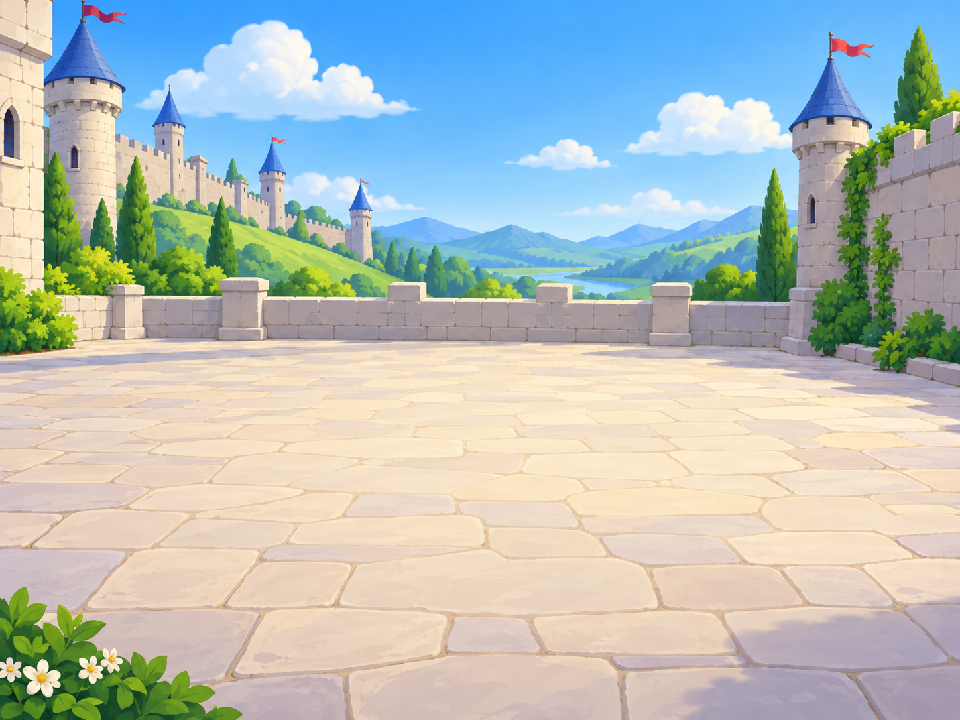
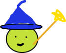
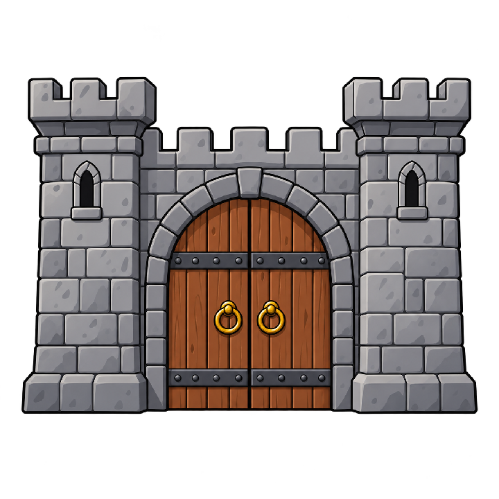

按數字選形狀
1 方形、2 六角、3 八角、4 多六角。
獅湖國小 Scratch 遊戲基礎班｜第 4 堂
先看遊戲，再把畫筆積木拼起來；每一步都按鍵試畫。
國小四年級｜120 分鐘
講師｜沈明福（阿福教練）
主辦｜高雄科學園丁協會
協辦｜高雄市獅湖國小
01｜先看見成果

第 1 關｜目標：正方形

1 方形、2 六角、3 八角、4 多六角。
重複「移動、轉向」畫完每條邊。
開門後走過去；最後挑戰暗室。
開場提問：如果要畫一個有 6 條邊的圖案，重複幾次？每次要轉多少度？
學習單上方有可操作的遊戲示意和鍵盤控制。
02｜今天的學習路線
03｜遊戲怎麼知道要做什麼？
廣播像傳話：「設定本關」「重置本關」「畫形狀」「答對開門」「過關」。
04｜新概念一：變數
這兩個盒子放文字，程式用「=」比一比。
記住現在第幾關，決定下一關的提示和角色造型。
記住門的狀態，避免碰門時連續跳關。
05｜新工具：畫筆擴充功能
小檢查：如果畫完後角色移動時留下多餘線條，少了哪一塊？
06｜第一個形狀：正方形
四條邊 → 重複 4 次
一圈 360° ÷ 4 → 轉 90°
07｜從正方形找到規律
轉角 = 360° ÷ 邊數
08｜角色分工讓遊戲接得起來
按鍵選圖形、方向鍵移動、收到重置訊息後回起點並換造型。
清線、定位、下筆，再根據選擇畫出指定多邊形。
舞台選目標、推進關卡；城門答對切換為開啟造型。
學生任務：只拼畫筆角色的多邊形程式；其他遊戲流程保留，讓孩子可以立刻測試。
09｜暗室加碼：多個正六角形
內層：一個六角形的 6 條邊。
外層：重複畫出多個六角形，每次轉向並改變筆色。
6 × (移動60、右轉60)
再重複24次、每次右轉15°
先完成一個六角形，再把它放進外層重複裡。
10｜排錯與教師備課
沒有線：檢查下筆是否在移動之前。
畫錯起點：檢查定位與面朝。
圖形沒閉合：檢查重複次數與角度。
線一直留下：畫完要抬筆。
按鍵沒反應：檢查玩家選擇文字是否一致。
門沒開：檢查目標和玩家選擇的比對。
碰門連跳：檢查已觸發過關是否重設。
完成版檢查提醒：第 4 關收到「設定本關」時目前會廣播兩次「重置本關」；`遊戲結束` 已建立但尚未控制移動。若要正式課堂展示，建議課前實際操作確認是否需要修正。
11｜120 分鐘課堂節奏
優先順序：先讓每個孩子成功畫出一種多邊形；多六角形做為加碼。
12｜今天的發現
重複次數對應邊數；轉角 = 360 ÷ 邊數。
下筆、抬筆、清除；用兩層重複畫圖案。
改變邊長、筆色、轉角或角色，做出自己的魔法印記。
先完成一個形狀，再多加一個想法。每次只改一個地方，觀察圖案怎麼變。
回到互動學習單 ↗講師｜沈明福（阿福教練）
主辦｜高雄科學園丁協會 ・ 協辦｜高雄市獅湖國小